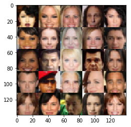
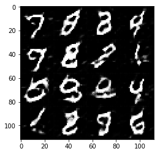
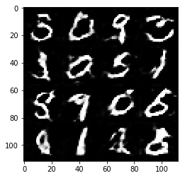
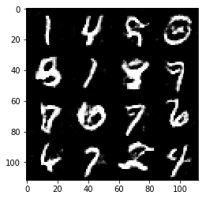
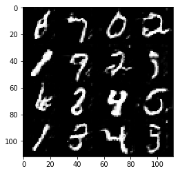
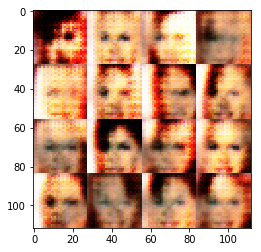
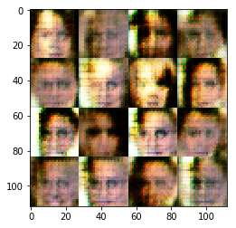

Face Generation
In this project, you'll use generative adversarial networks to generate new images of faces.
Get the Data
You'll be using two datasets in this project: - MNIST - CelebA
Since the celebA dataset is complex and you're doing GANs in a project for the first time, we want you to test your neural network on MNIST before CelebA. Running the GANs on MNIST will allow you to see how well your model trains sooner.
If you're using FloydHub, set data_dir to "/input" and use the FloydHub data ID "R5KrjnANiKVhLWAkpXhNBe".
data_dir = './data' # FloydHub - Use with data ID "R5KrjnANiKVhLWAkpXhNBe" #data_dir = '/input' """ DON'T MODIFY ANYTHING IN THIS CELL """ import helper helper.download_extract('mnist', data_dir) helper.download_extract('celeba', data_dir)
Found mnist Data Found celeba Data
Explore the Data
MNIST
As you're aware, the MNIST dataset contains images of handwritten digits. You can view the first number of examples by changing show_n_images.
show_n_images = 25 """ DON'T MODIFY ANYTHING IN THIS CELL """ %matplotlib inline import os from glob import glob from matplotlib import pyplot mnist_images = helper.get_batch(glob(os.path.join(data_dir, 'mnist/*.jpg'))[:show_n_images], 28, 28, 'L') pyplot.imshow(helper.images_square_grid(mnist_images, 'L'), cmap='gray')
<matplotlib.image.AxesImage at 0x7f5ca6429390>

CelebA
The CelebFaces Attributes Dataset (CelebA) dataset contains over 200,000 celebrity images with annotations. Since you're going to be generating faces, you won't need the annotations. You can view the first number of examples by changing show_n_images.
show_n_images = 25 """ DON'T MODIFY ANYTHING IN THIS CELL """ mnist_images = helper.get_batch(glob(os.path.join(data_dir, 'img_align_celeba/*.jpg'))[:show_n_images], 28, 28, 'RGB') pyplot.imshow(helper.images_square_grid(mnist_images, 'RGB'))
<matplotlib.image.AxesImage at 0x7f5ca634ff60>

Preprocess the Data
Since the project's main focus is on building the GANs, we'll preprocess the data for you. The values of the MNIST and CelebA dataset will be in the range of -0.5 to 0.5 of 28x28 dimensional images. The CelebA images will be cropped to remove parts of the image that don't include a face, then resized down to 28x28.
The MNIST images are black and white images with a single [color channel](https://en.wikipedia.org/wiki/Channel_(digital_image%29) while the CelebA images have [3 color channels (RGB color channel)](https://en.wikipedia.org/wiki/Channel_(digital_image%29#RGB_Images).
Build the Neural Network
You'll build the components necessary to build a GANs by implementing the following functions below:
- model_inputs
- discriminator
- generator
- model_loss
- model_opt
- train
Check the Version of TensorFlow and Access to GPU
This will check to make sure you have the correct version of TensorFlow and access to a GPU
""" DON'T MODIFY ANYTHING IN THIS CELL """ from distutils.version import LooseVersion import warnings import tensorflow as tf # Check TensorFlow Version assert LooseVersion(tf.__version__) >= LooseVersion('1.0'), 'Please use TensorFlow version 1.0 or newer. You are using {}'.format(tf.__version__) print('TensorFlow Version: {}'.format(tf.__version__)) # Check for a GPU if not tf.test.gpu_device_name(): warnings.warn('No GPU found. Please use a GPU to train your neural network.') else: print('Default GPU Device: {}'.format(tf.test.gpu_device_name()))
TensorFlow Version: 1.0.0 Default GPU Device: /gpu:0
Input
Implement the model_inputs function to create TF Placeholders for the Neural Network. It should create the following placeholders:
- Real input images placeholder with rank 4 using image_width, image_height, and image_channels.
- Z input placeholder with rank 2 using z_dim.
- Learning rate placeholder with rank 0.
Return the placeholders in the following the tuple (tensor of real input images, tensor of z data)
import problem_unittests as tests def model_inputs(image_width, image_height, image_channels, z_dim): """ Create the model inputs :param image_width: The input image width :param image_height: The input image height :param image_channels: The number of image channels :param z_dim: The dimension of Z :return: Tuple of (tensor of real input images, tensor of z data, learning rate) """ # TODO: Implement Function #1. Real input images placeholder with rank 4 using image_width, image_height, and image_channels. input_real = tf.placeholder(tf.float32, [None, image_width,\ image_height,\ image_channels],\ name = "input_real") #2. Z input placeholder with rank 2 using z_dim. input_z = tf.placeholder(tf.float32, [None, z_dim],\ name = "input_z") #3. Learning rate placeholder with rank 0. learning_rate = tf.placeholder(tf.float32, None,\ name = "learning_rate") return input_real, input_z, learning_rate """ DON'T MODIFY ANYTHING IN THIS CELL THAT IS BELOW THIS LINE """ tests.test_model_inputs(model_inputs)
Tests Passed
Discriminator
Implement discriminator to create a discriminator neural network that discriminates on images. This function should be able to reuse the variabes in the neural network. Use tf.variable_scope with a scope name of "discriminator" to allow the variables to be reused. The function should return a tuple of (tensor output of the generator, tensor logits of the generator).
def discriminator(images, reuse=False): """ Create the discriminator network :param image: Tensor of input image(s) :param reuse: Boolean if the weights should be reused :return: Tuple of (tensor output of the discriminator, tensor logits of the discriminator) """ # TODO: Implement Function alpha= 0.1 sdev= 0.02 with tf.variable_scope('discriminator', reuse=reuse): # input layer with image size(28*28*3) x1 = tf.layers.conv2d(images, 32, 5, 2,\ padding='same',\ kernel_initializer=tf.random_normal_initializer(stddev=sdev)) lrelu1 = tf.maximum(alpha * x1, x1) # Layer 1 out: 14x14x32 # Layer 2: 14x14x32 x2 = tf.layers.conv2d(lrelu1, 64, 5, 2,\ padding='same',\ kernel_initializer=tf.random_normal_initializer(stddev=sdev)) bn2 = tf.layers.batch_normalization(x2, training=True) lrelu2 = tf.maximum(alpha * bn2, bn2) # Layer 2 out: 7x7x64 x3 = tf.layers.conv2d(lrelu2, 128, 5, 2,\ padding='same',\ kernel_initializer=tf.random_normal_initializer(stddev=sdev)) bn3 = tf.layers.batch_normalization(x3, training=True) lrelu3 = tf.maximum(alpha * bn3, bn3) # Layer 3 out: 4x4x128 x4 = tf.layers.conv2d(lrelu3, 256, 5, 2,\ padding='same',\ kernel_initializer=tf.random_normal_initializer(stddev=sdev)) bn4 = tf.layers.batch_normalization(x4, training=True) lrelu4 = tf.maximum(alpha * bn4, bn4) # Layer 4 out: 2x2x256 flattened = tf.reshape(lrelu4, (-1, 2*2*256)) logits = tf.layers.dense(flattened, 1,\ kernel_initializer=tf.random_normal_initializer(stddev=sdev)) output = tf.sigmoid(logits) return output, logits """ DON'T MODIFY ANYTHING IN THIS CELL THAT IS BELOW THIS LINE """ tests.test_discriminator(discriminator, tf)
Tests Passed
Generator
Implement generator to generate an image using z. This function should be able to reuse the variabes in the neural network. Use tf.variable_scope with a scope name of "generator" to allow the variables to be reused. The function should return the generated 28 x 28 x out_channel_dim images.
def generator(z, out_channel_dim, is_train=True): """ Create the generator network :param z: Input z :param out_channel_dim: The number of channels in the output image :param is_train: Boolean if generator is being used for training :return: The tensor output of the generator """ # TODO: Implement Function alpha = 0.2 sdev = 0.02 # variable scope for generator with tf.variable_scope('generator', reuse=not is_train): #fake with fully connected # Layer 1 in: 7x7x256 x1 = tf.layers.dense(z, 4 * 4 * 512) x1 = tf.reshape(x1, (-1, 4, 4, 512)) lrelu1 = tf.maximum(alpha * x1, x1) # Layer 1 out: 4x4x512 x2 = tf.layers.conv2d_transpose(lrelu1, 128, 4, 1,\ padding='valid',\ kernel_initializer=tf.random_normal_initializer(stddev=sdev)) bn2 = tf.layers.batch_normalization(x2, training=is_train) lrelu2 = tf.maximum(alpha * bn2, bn2) # Layer 2 out: 8x8x128 x3 = tf.layers.conv2d_transpose(lrelu2, 64, 5, 2,\ padding='same', \ kernel_initializer=tf.random_normal_initializer(stddev=sdev)) bn3 = tf.layers.batch_normalization(x3, training=is_train) lrelu3 = tf.maximum(alpha * bn3, bn3) # Layer 3 out: 16x16x64 x4 = tf.layers.conv2d_transpose(lrelu3, 32, 5, 2,\ padding='same',\ kernel_initializer=tf.random_normal_initializer(stddev=sdev)) bn4 = tf.layers.batch_normalization(x4, training=is_train) lrelu4 = tf.maximum(alpha * bn4, bn4) # Layer 4 out: 32x32x32 logits = tf.layers.conv2d_transpose(lrelu4, out_channel_dim, 3, 1,\ padding='same',\ kernel_initializer=tf.random_normal_initializer(stddev=sdev)) output = tf.tanh(logits) return output """ DON'T MODIFY ANYTHING IN THIS CELL THAT IS BELOW THIS LINE """ tests.test_generator(generator, tf)
Tests Passed
Loss
Implement model_loss to build the GANs for training and calculate the loss. The function should return a tuple of (discriminator loss, generator loss). Use the following functions you implemented:
- discriminator(images, reuse=False)
- generator(z, out_channel_dim, is_train=True)
def model_loss(input_real, input_z, out_channel_dim): """ Get the loss for the discriminator and generator :param input_real: Images from the real dataset :param input_z: Z input :param out_channel_dim: The number of channels in the output image :return: A tuple of (discriminator loss, generator loss) """ # TODO: Implement Function g_model = generator(input_z, out_channel_dim) d_model_real, d_logits_real = discriminator(input_real) d_model_fake, d_logits_fake = discriminator(g_model, reuse=True) d_loss_real = tf.reduce_mean( tf.nn.sigmoid_cross_entropy_with_logits(logits=d_logits_real,\ labels=tf.ones_like(d_model_real))) d_loss_fake = tf.reduce_mean( tf.nn.sigmoid_cross_entropy_with_logits(logits=d_logits_fake,\ labels=tf.zeros_like(d_model_fake))) g_loss = tf.reduce_mean( tf.nn.sigmoid_cross_entropy_with_logits(logits=d_logits_fake,\ labels=tf.ones_like(d_model_fake))) d_loss = d_loss_real + d_loss_fake return d_loss, g_loss """ DON'T MODIFY ANYTHING IN THIS CELL THAT IS BELOW THIS LINE """ tests.test_model_loss(model_loss)
Tests Passed
Optimization
Implement model_opt to create the optimization operations for the GANs. Use tf.trainable_variables to get all the trainable variables. Filter the variables with names that are in the discriminator and generator scope names. The function should return a tuple of (discriminator training operation, generator training operation).
def model_opt(d_loss, g_loss, learning_rate, beta1): """ Get optimization operations :param d_loss: Discriminator loss Tensor :param g_loss: Generator loss Tensor :param learning_rate: Learning Rate Placeholder :param beta1: The exponential decay rate for the 1st moment in the optimizer :return: A tuple of (discriminator training operation, generator training operation) """ # TODO: Implement Function t_vars = tf.trainable_variables() d_vars = [var for var in t_vars if var.name.startswith('discriminator')] g_vars = [var for var in t_vars if var.name.startswith('generator')] # Optimize d_train_opt = tf.train.AdamOptimizer(learning_rate,\ beta1=beta1).minimize(d_loss, var_list=d_vars) with tf.control_dependencies(tf.get_collection(tf.GraphKeys.UPDATE_OPS)): g_train_opt = tf.train.AdamOptimizer(learning_rate,\ beta1=beta1).minimize(g_loss, var_list=g_vars) return d_train_opt, g_train_opt """ DON'T MODIFY ANYTHING IN THIS CELL THAT IS BELOW THIS LINE """ tests.test_model_opt(model_opt, tf)
Tests Passed
Neural Network Training
Show Output
Use this function to show the current output of the generator during training. It will help you determine how well the GANs is training.
""" DON'T MODIFY ANYTHING IN THIS CELL """ import numpy as np def show_generator_output(sess, n_images, input_z, out_channel_dim, image_mode): """ Show example output for the generator :param sess: TensorFlow session :param n_images: Number of Images to display :param input_z: Input Z Tensor :param out_channel_dim: The number of channels in the output image :param image_mode: The mode to use for images ("RGB" or "L") """ cmap = None if image_mode == 'RGB' else 'gray' z_dim = input_z.get_shape().as_list()[-1] example_z = np.random.uniform(-1, 1, size=[n_images, z_dim]) samples = sess.run( generator(input_z, out_channel_dim, False), feed_dict={input_z: example_z}) images_grid = helper.images_square_grid(samples, image_mode) pyplot.imshow(images_grid, cmap=cmap) pyplot.show()
Train
Implement train to build and train the GANs. Use the following functions you implemented:
- model_inputs(image_width, image_height, image_channels, z_dim)
- model_loss(input_real, input_z, out_channel_dim)
- model_opt(d_loss, g_loss, learning_rate, beta1)
Use the show_generator_output to show generator output while you train. Running show_generator_output for every batch will drastically increase training time and increase the size of the notebook. It's recommended to print the generator output every 100 batches.
def train(epoch_count, batch_size, z_dim, learning_rate, beta1, get_batches, data_shape, data_image_mode): """ Train the GAN :param epoch_count: Number of epochs :param batch_size: Batch Size :param z_dim: Z dimension :param learning_rate: Learning Rate :param beta1: The exponential decay rate for the 1st moment in the optimizer :param get_batches: Function to get batches :param data_shape: Shape of the data :param data_image_mode: The image mode to use for images ("RGB" or "L") """ # TODO: Build Model n_samples, width, height, channels = data_shape input_real, input_z, learn_rate = model_inputs(width, height, channels, z_dim) d_loss, g_loss = model_loss(input_real, input_z, channels) d_opt, g_opt = model_opt(d_loss, g_loss, learn_rate, beta1) steps = 0 show_every = 50 print_every = 25 with tf.Session() as sess: sess.run(tf.global_variables_initializer()) for epoch_i in range(epoch_count): for batch_images in get_batches(batch_size): batch_images *= 2 # TODO: Train Model steps += 1 # Sample random noise for G batch_z = np.random.uniform(-1, 1, size=(batch_size, z_dim)) # Run optimizers _ = sess.run(d_opt, feed_dict={input_real: batch_images,\ input_z: batch_z,\ learn_rate: learning_rate}) _ = sess.run(g_opt, feed_dict={input_real: batch_images,\ input_z: batch_z,\ learn_rate: learning_rate}) # show_generator_output to show generator output if steps % show_every == 0: n_images = 16 show_generator_output(sess, n_images, input_z, channels, data_image_mode) if steps % print_every == 0: train_loss_d = d_loss.eval({input_z: batch_z, input_real: batch_images}) train_loss_g = g_loss.eval({input_z: batch_z}) print("Epoch {}/{}...".format(epoch_i, epoch_count), "Discriminator Loss: {:.4f}...".format(train_loss_d), "Generator Loss: {:.4f}".format(train_loss_g))
MNIST
Test your GANs architecture on MNIST. After 2 epochs, the GANs should be able to generate images that look like handwritten digits. Make sure the loss of the generator is lower than the loss of the discriminator or close to 0.
batch_size = 64 z_dim = 100 learning_rate = 0.0005 beta1 = 0.5 """ DON'T MODIFY ANYTHING IN THIS CELL THAT IS BELOW THIS LINE """ epochs = 2 mnist_dataset = helper.Dataset('mnist', glob(os.path.join(data_dir, 'mnist/*.jpg'))) with tf.Graph().as_default(): train(epochs, batch_size, z_dim, learning_rate, beta1, mnist_dataset.get_batches, mnist_dataset.shape, mnist_dataset.image_mode)
Epoch 0/2... Discriminator Loss: 0.1132... Generator Loss: 3.8164

Epoch 0/2... Discriminator Loss: 0.4083... Generator Loss: 1.6668 Epoch 0/2... Discriminator Loss: 0.2134... Generator Loss: 2.3080
Epoch 0/2... Discriminator Loss: 0.8935... Generator Loss: 0.7820 Epoch 0/2... Discriminator Loss: 0.9974... Generator Loss: 0.9753

Epoch 0/2... Discriminator Loss: 1.4598... Generator Loss: 0.4637 Epoch 0/2... Discriminator Loss: 1.0837... Generator Loss: 0.9862

Epoch 0/2... Discriminator Loss: 1.0771... Generator Loss: 1.2634 Epoch 0/2... Discriminator Loss: 1.5585... Generator Loss: 0.3205

Epoch 0/2... Discriminator Loss: 1.0825... Generator Loss: 0.6745 Epoch 0/2... Discriminator Loss: 0.9129... Generator Loss: 1.0191

Epoch 0/2... Discriminator Loss: 0.9434... Generator Loss: 0.8767 Epoch 0/2... Discriminator Loss: 0.9463... Generator Loss: 0.9866

Epoch 0/2... Discriminator Loss: 1.1447... Generator Loss: 0.6476 Epoch 0/2... Discriminator Loss: 1.3758... Generator Loss: 0.4319

Epoch 0/2... Discriminator Loss: 0.9714... Generator Loss: 0.6623 Epoch 0/2... Discriminator Loss: 1.5291... Generator Loss: 0.3816

Epoch 0/2... Discriminator Loss: 1.3693... Generator Loss: 2.0586 Epoch 0/2... Discriminator Loss: 1.7561... Generator Loss: 0.2967

Epoch 0/2... Discriminator Loss: 1.5004... Generator Loss: 0.3576 Epoch 0/2... Discriminator Loss: 0.7120... Generator Loss: 1.2979

Epoch 0/2... Discriminator Loss: 0.8413... Generator Loss: 1.0782 Epoch 0/2... Discriminator Loss: 1.1858... Generator Loss: 0.5920
Epoch 0/2... Discriminator Loss: 1.0060... Generator Loss: 0.6120 Epoch 0/2... Discriminator Loss: 1.2757... Generator Loss: 0.4474
Epoch 0/2... Discriminator Loss: 1.5774... Generator Loss: 0.3005 Epoch 0/2... Discriminator Loss: 1.2721... Generator Loss: 0.4242

Epoch 0/2... Discriminator Loss: 1.0972... Generator Loss: 0.5191 Epoch 0/2... Discriminator Loss: 0.8444... Generator Loss: 1.2999
Epoch 0/2... Discriminator Loss: 0.8549... Generator Loss: 0.9284 Epoch 0/2... Discriminator Loss: 0.8498... Generator Loss: 0.9417

Epoch 0/2... Discriminator Loss: 0.6521... Generator Loss: 1.2973 Epoch 0/2... Discriminator Loss: 0.9847... Generator Loss: 0.6543
Epoch 0/2... Discriminator Loss: 1.2542... Generator Loss: 0.4832 Epoch 0/2... Discriminator Loss: 0.9244... Generator Loss: 1.4905

Epoch 0/2... Discriminator Loss: 1.0157... Generator Loss: 0.5582 Epoch 0/2... Discriminator Loss: 0.5705... Generator Loss: 1.7848

Epoch 1/2... Discriminator Loss: 1.0804... Generator Loss: 0.7368 Epoch 1/2... Discriminator Loss: 1.3714... Generator Loss: 2.7104

Epoch 1/2... Discriminator Loss: 0.7393... Generator Loss: 1.0792 Epoch 1/2... Discriminator Loss: 0.8901... Generator Loss: 0.9193
Epoch 1/2... Discriminator Loss: 1.3041... Generator Loss: 0.4482 Epoch 1/2... Discriminator Loss: 1.0246... Generator Loss: 1.6754

Epoch 1/2... Discriminator Loss: 1.4366... Generator Loss: 0.4005 Epoch 1/2... Discriminator Loss: 0.7496... Generator Loss: 0.9064

Epoch 1/2... Discriminator Loss: 1.0066... Generator Loss: 0.6571 Epoch 1/2... Discriminator Loss: 0.6344... Generator Loss: 1.0048

Epoch 1/2... Discriminator Loss: 0.9111... Generator Loss: 1.4843 Epoch 1/2... Discriminator Loss: 0.8954... Generator Loss: 1.0413
Epoch 1/2... Discriminator Loss: 2.1049... Generator Loss: 0.1755 Epoch 1/2... Discriminator Loss: 1.0708... Generator Loss: 0.5250

Epoch 1/2... Discriminator Loss: 1.4498... Generator Loss: 0.3438 Epoch 1/2... Discriminator Loss: 0.8951... Generator Loss: 0.7148

Epoch 1/2... Discriminator Loss: 0.9677... Generator Loss: 0.6380 Epoch 1/2... Discriminator Loss: 2.0528... Generator Loss: 0.1594
Epoch 1/2... Discriminator Loss: 0.5354... Generator Loss: 1.1890 Epoch 1/2... Discriminator Loss: 1.5721... Generator Loss: 0.5104

Epoch 1/2... Discriminator Loss: 0.7788... Generator Loss: 0.9999 Epoch 1/2... Discriminator Loss: 0.8880... Generator Loss: 0.6436

Epoch 1/2... Discriminator Loss: 0.6986... Generator Loss: 1.4282 Epoch 1/2... Discriminator Loss: 1.2309... Generator Loss: 0.4484

Epoch 1/2... Discriminator Loss: 1.0756... Generator Loss: 0.6155 Epoch 1/2... Discriminator Loss: 3.1573... Generator Loss: 3.8849

Epoch 1/2... Discriminator Loss: 0.8739... Generator Loss: 0.6847 Epoch 1/2... Discriminator Loss: 1.7689... Generator Loss: 0.2244
Epoch 1/2... Discriminator Loss: 0.8876... Generator Loss: 0.7815 Epoch 1/2... Discriminator Loss: 1.1661... Generator Loss: 0.4628

Epoch 1/2... Discriminator Loss: 1.5133... Generator Loss: 0.3179 Epoch 1/2... Discriminator Loss: 0.6079... Generator Loss: 1.3311
Epoch 1/2... Discriminator Loss: 0.7159... Generator Loss: 1.5858 Epoch 1/2... Discriminator Loss: 0.7321... Generator Loss: 0.8564
Epoch 1/2... Discriminator Loss: 1.2747... Generator Loss: 0.4073 Epoch 1/2... Discriminator Loss: 1.3412... Generator Loss: 0.3678

Epoch 1/2... Discriminator Loss: 0.8914... Generator Loss: 0.7424
CelebA
Run your GANs on CelebA. It will take around 20 minutes on the average GPU to run one epoch. You can run the whole epoch or stop when it starts to generate realistic faces.
batch_size = 64 z_dim = 100 learning_rate = 0.0005 beta1 = 0.5 """ DON'T MODIFY ANYTHING IN THIS CELL THAT IS BELOW THIS LINE """ epochs = 1 celeba_dataset = helper.Dataset('celeba', glob(os.path.join(data_dir, 'img_align_celeba/*.jpg'))) with tf.Graph().as_default(): train(epochs, batch_size, z_dim, learning_rate, beta1, celeba_dataset.get_batches, celeba_dataset.shape, celeba_dataset.image_mode)
Epoch 0/1... Discriminator Loss: 0.6341... Generator Loss: 1.5425

Epoch 0/1... Discriminator Loss: 1.0661... Generator Loss: 1.4051 Epoch 0/1... Discriminator Loss: 1.4774... Generator Loss: 0.4814
Epoch 0/1... Discriminator Loss: 0.5296... Generator Loss: 2.0486 Epoch 0/1... Discriminator Loss: 0.4144... Generator Loss: 1.7049
Epoch 0/1... Discriminator Loss: 0.8953... Generator Loss: 1.3714 Epoch 0/1... Discriminator Loss: 1.2676... Generator Loss: 2.1938

Epoch 0/1... Discriminator Loss: 0.6703... Generator Loss: 1.9268 Epoch 0/1... Discriminator Loss: 1.3622... Generator Loss: 0.9100
Epoch 0/1... Discriminator Loss: 0.8473... Generator Loss: 1.2377 Epoch 0/1... Discriminator Loss: 0.7923... Generator Loss: 1.3153

Epoch 0/1... Discriminator Loss: 2.3745... Generator Loss: 3.9981 Epoch 0/1... Discriminator Loss: 1.3498... Generator Loss: 0.9091

Epoch 0/1... Discriminator Loss: 0.9757... Generator Loss: 1.3260 Epoch 0/1... Discriminator Loss: 0.9970... Generator Loss: 0.8662

Epoch 0/1... Discriminator Loss: 1.2872... Generator Loss: 0.7643 Epoch 0/1... Discriminator Loss: 0.9423... Generator Loss: 1.0006
Epoch 0/1... Discriminator Loss: 0.6227... Generator Loss: 1.2088 Epoch 0/1... Discriminator Loss: 0.5900... Generator Loss: 1.5671

Epoch 0/1... Discriminator Loss: 1.0243... Generator Loss: 0.9068 Epoch 0/1... Discriminator Loss: 1.5452... Generator Loss: 0.3467

Epoch 0/1... Discriminator Loss: 0.9187... Generator Loss: 1.3025 Epoch 0/1... Discriminator Loss: 0.9896... Generator Loss: 0.9055

Epoch 0/1... Discriminator Loss: 0.9112... Generator Loss: 1.2679 Epoch 0/1... Discriminator Loss: 1.0865... Generator Loss: 1.3766

Epoch 0/1... Discriminator Loss: 1.0086... Generator Loss: 0.7582 Epoch 0/1... Discriminator Loss: 0.8523... Generator Loss: 1.3466
Epoch 0/1... Discriminator Loss: 0.7004... Generator Loss: 1.6204 Epoch 0/1... Discriminator Loss: 1.1147... Generator Loss: 1.0215

Epoch 0/1... Discriminator Loss: 0.9817... Generator Loss: 0.9707 Epoch 0/1... Discriminator Loss: 0.8524... Generator Loss: 0.7910
Epoch 0/1... Discriminator Loss: 1.3500... Generator Loss: 0.6876 Epoch 0/1... Discriminator Loss: 1.1861... Generator Loss: 0.7478

Epoch 0/1... Discriminator Loss: 1.4163... Generator Loss: 0.4300 Epoch 0/1... Discriminator Loss: 1.3214... Generator Loss: 0.6985

Epoch 0/1... Discriminator Loss: 1.6581... Generator Loss: 0.3179 Epoch 0/1... Discriminator Loss: 0.8624... Generator Loss: 2.0154
Epoch 0/1... Discriminator Loss: 0.7325... Generator Loss: 1.5246 Epoch 0/1... Discriminator Loss: 1.3200... Generator Loss: 0.4783
Epoch 0/1... Discriminator Loss: 0.9317... Generator Loss: 0.8402 Epoch 0/1... Discriminator Loss: 1.2700... Generator Loss: 1.6259
Epoch 0/1... Discriminator Loss: 1.6959... Generator Loss: 1.6403 Epoch 0/1... Discriminator Loss: 0.9565... Generator Loss: 1.8874

Epoch 0/1... Discriminator Loss: 0.7762... Generator Loss: 1.6332 Epoch 0/1... Discriminator Loss: 0.9902... Generator Loss: 0.6471
Epoch 0/1... Discriminator Loss: 1.0775... Generator Loss: 0.6818 Epoch 0/1... Discriminator Loss: 1.0928... Generator Loss: 0.9076

Epoch 0/1... Discriminator Loss: 1.2636... Generator Loss: 0.8888 Epoch 0/1... Discriminator Loss: 1.9158... Generator Loss: 0.1960
Epoch 0/1... Discriminator Loss: 1.0883... Generator Loss: 0.6902 Epoch 0/1... Discriminator Loss: 1.0772... Generator Loss: 0.6896

Epoch 0/1... Discriminator Loss: 1.1797... Generator Loss: 0.5554 Epoch 0/1... Discriminator Loss: 1.1049... Generator Loss: 0.9699

Epoch 0/1... Discriminator Loss: 1.2788... Generator Loss: 2.0408 Epoch 0/1... Discriminator Loss: 0.7399... Generator Loss: 1.1408

Epoch 0/1... Discriminator Loss: 1.3329... Generator Loss: 0.4466 Epoch 0/1... Discriminator Loss: 0.9657... Generator Loss: 0.9572
Epoch 0/1... Discriminator Loss: 1.0361... Generator Loss: 0.7271 Epoch 0/1... Discriminator Loss: 1.0897... Generator Loss: 0.8504
Epoch 0/1... Discriminator Loss: 1.2010... Generator Loss: 1.1790 Epoch 0/1... Discriminator Loss: 1.6883... Generator Loss: 1.1168

Epoch 0/1... Discriminator Loss: 1.0092... Generator Loss: 0.6636 Epoch 0/1... Discriminator Loss: 1.3417... Generator Loss: 0.5133

Epoch 0/1... Discriminator Loss: 0.9791... Generator Loss: 0.9111 Epoch 0/1... Discriminator Loss: 0.8803... Generator Loss: 1.1090

Epoch 0/1... Discriminator Loss: 0.8513... Generator Loss: 1.2366 Epoch 0/1... Discriminator Loss: 0.7197... Generator Loss: 1.5789
Epoch 0/1... Discriminator Loss: 0.9334... Generator Loss: 0.7907 Epoch 0/1... Discriminator Loss: 1.1299... Generator Loss: 0.5871
Epoch 0/1... Discriminator Loss: 0.9805... Generator Loss: 1.1100 Epoch 0/1... Discriminator Loss: 1.1180... Generator Loss: 2.0649

Epoch 0/1... Discriminator Loss: 0.9413... Generator Loss: 0.6843 Epoch 0/1... Discriminator Loss: 1.1723... Generator Loss: 1.0662
Epoch 0/1... Discriminator Loss: 1.3740... Generator Loss: 0.4719 Epoch 0/1... Discriminator Loss: 1.2226... Generator Loss: 0.7428

Epoch 0/1... Discriminator Loss: 1.0916... Generator Loss: 1.5043 Epoch 0/1... Discriminator Loss: 1.2517... Generator Loss: 2.0049
Epoch 0/1... Discriminator Loss: 1.1599... Generator Loss: 0.7082 Epoch 0/1... Discriminator Loss: 1.0402... Generator Loss: 0.8053
Epoch 0/1... Discriminator Loss: 1.0036... Generator Loss: 0.9750 Epoch 0/1... Discriminator Loss: 0.9274... Generator Loss: 0.9230

Epoch 0/1... Discriminator Loss: 1.1304... Generator Loss: 1.1508 Epoch 0/1... Discriminator Loss: 0.7811... Generator Loss: 1.4115
Epoch 0/1... Discriminator Loss: 1.0645... Generator Loss: 0.8931 Epoch 0/1... Discriminator Loss: 1.4299... Generator Loss: 2.5213
Epoch 0/1... Discriminator Loss: 1.0405... Generator Loss: 0.6912 Epoch 0/1... Discriminator Loss: 1.1746... Generator Loss: 0.6077
Epoch 0/1... Discriminator Loss: 0.9569... Generator Loss: 2.3023 Epoch 0/1... Discriminator Loss: 0.9257... Generator Loss: 0.9512
Epoch 0/1... Discriminator Loss: 0.9541... Generator Loss: 0.7513 Epoch 0/1... Discriminator Loss: 0.9034... Generator Loss: 0.9518

Epoch 0/1... Discriminator Loss: 1.1156... Generator Loss: 0.8511 Epoch 0/1... Discriminator Loss: 0.9349... Generator Loss: 1.1430

Epoch 0/1... Discriminator Loss: 1.0691... Generator Loss: 0.6279 Epoch 0/1... Discriminator Loss: 1.1409... Generator Loss: 0.9605

Epoch 0/1... Discriminator Loss: 1.4045... Generator Loss: 0.3858 Epoch 0/1... Discriminator Loss: 1.0732... Generator Loss: 0.7521
Epoch 0/1... Discriminator Loss: 1.0664... Generator Loss: 0.9785 Epoch 0/1... Discriminator Loss: 1.1484... Generator Loss: 1.4160
Epoch 0/1... Discriminator Loss: 1.2619... Generator Loss: 0.5863 Epoch 0/1... Discriminator Loss: 0.9650... Generator Loss: 0.9150
Epoch 0/1... Discriminator Loss: 0.9211... Generator Loss: 1.4288 Epoch 0/1... Discriminator Loss: 0.9854... Generator Loss: 0.7512

Epoch 0/1... Discriminator Loss: 0.8539... Generator Loss: 0.9985 Epoch 0/1... Discriminator Loss: 0.9036... Generator Loss: 1.0608

Epoch 0/1... Discriminator Loss: 1.0430... Generator Loss: 0.7103 Epoch 0/1... Discriminator Loss: 0.8404... Generator Loss: 0.9762

Epoch 0/1... Discriminator Loss: 1.2528... Generator Loss: 0.5786 Epoch 0/1... Discriminator Loss: 1.2818... Generator Loss: 0.4568

Epoch 0/1... Discriminator Loss: 1.0006... Generator Loss: 0.8900 Epoch 0/1... Discriminator Loss: 1.3815... Generator Loss: 0.3886

Epoch 0/1... Discriminator Loss: 1.2679... Generator Loss: 0.5873 Epoch 0/1... Discriminator Loss: 0.9585... Generator Loss: 0.9575
Epoch 0/1... Discriminator Loss: 1.2240... Generator Loss: 0.7966 Epoch 0/1... Discriminator Loss: 0.8579... Generator Loss: 1.4551

Epoch 0/1... Discriminator Loss: 1.3028... Generator Loss: 0.5394 Epoch 0/1... Discriminator Loss: 1.1112... Generator Loss: 0.7762

Epoch 0/1... Discriminator Loss: 1.1230... Generator Loss: 0.9227 Epoch 0/1... Discriminator Loss: 1.2362... Generator Loss: 0.5178

Epoch 0/1... Discriminator Loss: 1.0913... Generator Loss: 0.7929 Epoch 0/1... Discriminator Loss: 0.8596... Generator Loss: 0.9705

Epoch 0/1... Discriminator Loss: 1.1329... Generator Loss: 0.6999 Epoch 0/1... Discriminator Loss: 1.0311... Generator Loss: 0.8163
Epoch 0/1... Discriminator Loss: 0.8289... Generator Loss: 1.1358 Epoch 0/1... Discriminator Loss: 1.2079... Generator Loss: 0.5730

Epoch 0/1... Discriminator Loss: 0.9879... Generator Loss: 0.7466
Submitting This Project
When submitting this project, make sure to run all the cells before saving the notebook. Save the notebook file as "dlnd_face_generation.ipynb" and save it as a HTML file under "File" -> "Download as". Include the "helper.py" and "problem_unittests.py" files in your submission.